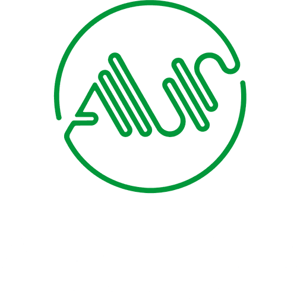

DI - ASH AI Pentest Platform
1-PAGE MANAGEMENT CHEAT SHEET | FEB 11, 2026
Technology and Security - Plain Language Overview
This platform runs pentest scans, stores results, and uses local AI to explain risks. It now includes posture heat maps and compliance summary reporting mapped to major frameworks.
What the platform does
- Runs security scans (Nuclei, Nikto, SQLMap, Katana).
- Tracks scan status/history and keeps evidence.
- Generates Executive, Technical, Combined, and Compliance Summary reports.
- Lets teams ask chat questions like "explain report 126" or security-topic questions.
Current stack (why it helps)
- Frontend: HTML/CSS/JS for lightweight dashboard speed.
- Backend: FastAPI + Uvicorn for API and orchestration.
- Database: SQLite for simple local persistence and backup.
- AI: llama.cpp + GGUF for private, low-cost local analysis.
- Posture Layer: Heat map, target risk cards, and framework-aligned compliance mapping.
Security position (today)
- Role-aware authentication, step-up protection, and password hashing are enabled.
- Security headers (CSP, nosniff, frame deny, HSTS-on-HTTPS) are present.
- Scan timeout handling, SQLMap reliability controls, and false-positive suppression are active.
- Hardening still needed: strict CORS allowlist and long-term scale migration planning.
Best near-term upgrades
- Restrict CORS to trusted domains only.
- Maintain strong admin credential rotation policy.
- Move to PostgreSQL when concurrency/scale increases.
- Add periodic backup-restore drills and audit review.
Key terms for leadership
UvicornThe web server that runs the FastAPI application and serves requests on port 8000.
AsyncA way to handle many waiting tasks at once (I/O) without blocking the whole server.
llama.cppLocal runtime that executes AI models on your own machine (no cloud dependency).
GGUFModel file format optimized for local usage, often quantized to reduce memory usage.
SQLite QuerySimple SQL commands used to read scan history/findings from data/pentest.db.
Sample SQLite command for audit checks: sqlite3 /opt/ai-pentest/data/pentest.db "SELECT id,target,tool,status,created_at FROM scans ORDER BY id DESC LIMIT 20;"